광고 수익은 어떻게 들어오나요
AI로 사이트는 만들었는데 돈은 어떻게 버는지 막막하다면, 순서는 세 단계예요. 기본 세팅, 검색엔진 등록, 광고 세팅이에요. 영상은 이 세 가지를 실제로 따라 해요.
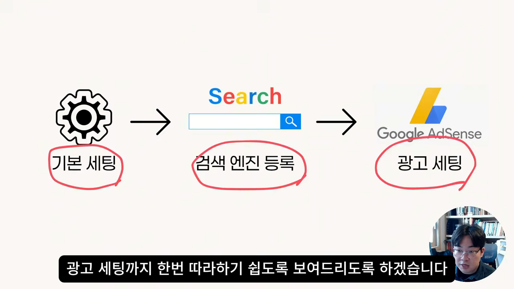
광고비 1,000원은 어떻게 나뉘나요
애드센스는 내 사이트에 광고를 걸고, 방문자가 그 광고를 보면 수익을 나눠 주는 구글 서비스예요. 광고를 내는 쪽은 구글 애즈를 써요. 광고주가 낸 돈이 사이트 주인에게 오기까지 두 번 수수료가 빠져요.
| 단계 | 떼는 비율 | 금액 |
|---|---|---|
| 광고주가 구글 애즈에 쓴 돈 | — | 1,000원 |
| 구글 애즈 수수료 | 약 15% | 약 150원 (남은 돈 850원) |
| 애드센스 몫 | 850원의 20% | 약 170원 |
| 사이트 주인 몫 | — | 약 680원 (광고비의 약 68%) |
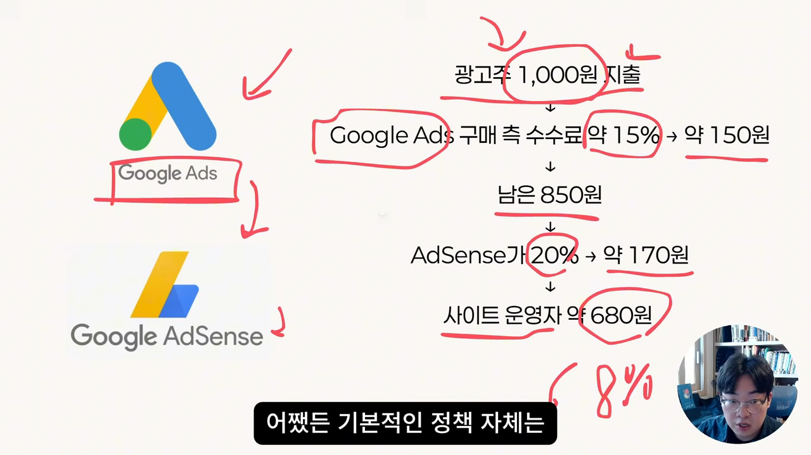
승인이 한동안 막힌다는 이른바 '샌드박스 기간' 이야기도 짧게 나와요. 말하는 사람은 개인적으로 그걸 믿지 않는다고 해요.
실습 사이트와 배포 준비
예시 사이트는 지난 영상에서 만든 복리 계산기예요. 초기 금액, 매월 적립금, 투자 기간, 연 수익률을 넣으면 몇 년 뒤 자산을 계산해 줘요. 1억에 매월 200만 원, 20년, 연 10%로 넣으면 약 21억 7,654만 원이 나와요. 관련 가이드 글도 몇 편 들어 있어요.

광고를 붙이기 전에 사이트가 내 도메인으로 배포돼 있어야 해요. 말하는 사람은 클라우드플레어에서 도메인 ad-branch.com을 사고, Workers에 사이트를 올린 뒤 compound-calc.ad-branch.com이라는 서브 도메인에 연결했어요.

이 상태에서 할 일은 두 가지예요. 하나는 애드센스 승인과 세팅이고, 다른 하나는 검색엔진 세팅이에요.
애드센스 등록과 ads.txt 소유권 확인
애드센스에 들어가 새 사이트를 추가하면, 사이트 화면에 '사이트 소유권을 확인하세요'와 '검토 요청' 단계가 나와요. 소유권 확인 방법은 여러 가지인데, 말하는 사람이 가장 추천하는 건 ads.txt예요.

파일 만들기와 배포는 AI에게
복사한 코드를 AI 코딩 도구의 새 채팅에 붙이고 '이걸 ads.txt로 등록하고 배포까지 완료해 줘'라고 적어요. 말하는 사람은 이 도구를 ChatGPT라고 부르는데, 화면 왼쪽 위에는 'Codex'라고 떠 있어요. 클라우드플레어 플러그인을 설치해 두고 '@클라우드플레어'를 붙이면 배포까지 알아서 해요.
코드에는 각자의 게시자 번호가 들어 있어요. 남의 코드를 그대로 쓰면 광고 수익이 그 사람에게 가니, 꼭 자기 코드를 써야 해요.

자동 광고 켜기
소유권 확인이 끝나면 광고를 세팅할 수 있어요. 애드센스 왼쪽 메뉴의 광고로 들어가면 '사이트 광고 관리'가 나와요. 여기서 사이트를 골라 먼저 자동 광고를 켜요.
자동 광고는 구글이 알아서 위치를 정해 띄우는 광고예요. 페이지 위에 붙는 배너, 화면 아래에서 올라오는 광고, 페이지를 넘어갈 때 뜨는 광고 같은 것들이에요. 미리보기 화면 오른쪽에서 형식을 하나씩 켜고 끌 수 있어요.
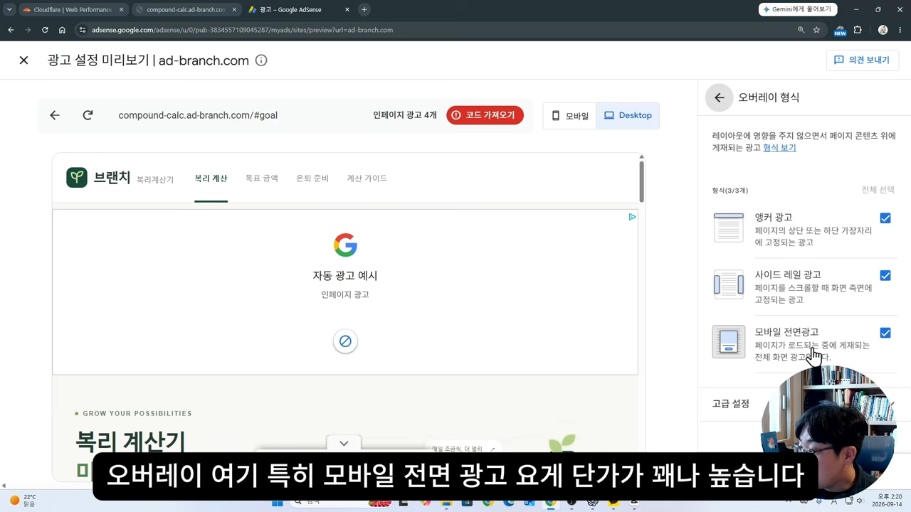
| 설정 | 영상의 선택 |
|---|---|
| 오버레이 형식 | 켜요. 특히 모바일 전면 광고는 꼭 |
| 의도 기반 형식 | 잘 쓰지 않아요 |
| 고급 설정 | 지금 단계에서는 기본 추천대로 둬도 괜찮아요 |
| 자동 최적화·실험 트래픽 | 크게 신경 쓰지 않아요 |
가장 중요한 건 자동 광고 스위치를 켜고 '사이트에 적용'으로 저장하는 거예요. 이것만 해도 기본 광고 세팅은 끝나요.
수동 광고 만들고 AI로 배치하기
광고는 자동과 수동 두 가지예요. 수동 광고는 내가 고른 자리에 직접 넣는 광고예요. 광고 메뉴 위쪽의 '광고 단위 기준' 탭에서 '신규 광고 단위 만들기'를 눌러요.
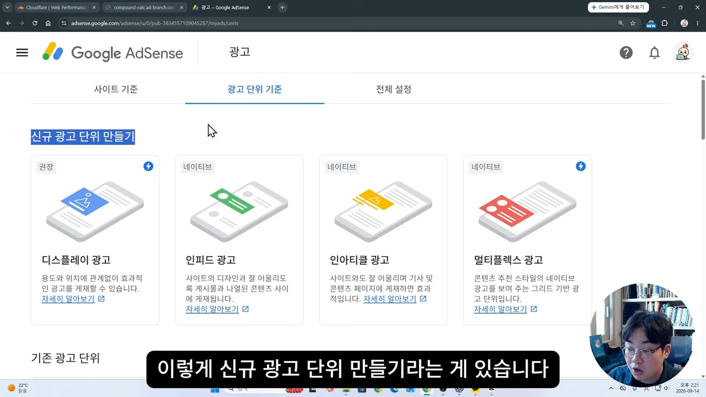
디스플레이 광고를 고르면 이름과 크기를 정해요. 이름은 알아보기 쉽게 '복리계산기 디스플레이 광고'처럼 적어요. 크기는 고정형과 반응형 중 반응형을 골라요. 반응형은 들어갈 자리의 너비에 맞춰 광고 크기를 알아서 바꿔요. 요즘 AI로 만든 사이트는 대부분 화면 크기에 맞춰 바뀌니 이게 잘 맞아요.
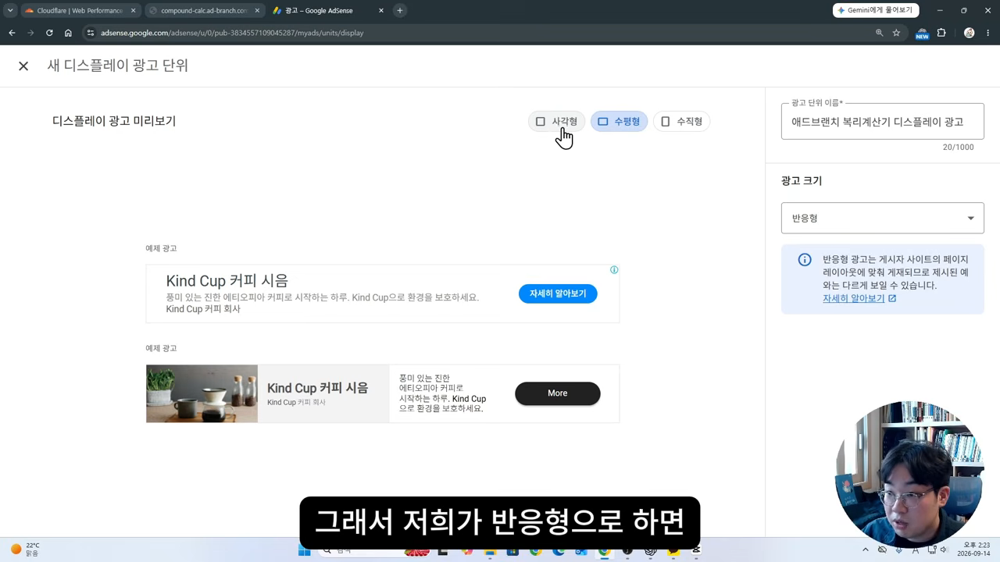
AI에게 배치를 맡기는 요령
'만들기'를 누르면 광고 코드가 나와요. 이걸 복사해서 AI 도구에 붙이고 '이건 내 디스플레이 반응형 광고야, 적절한 위치에 넣어 줘'라고 해요. 여기에 한 문장을 더 붙이는 게 이 영상의 핵심 팁이에요.
개발 라이브가 아니라 개발 환경에서는 광고가 뜨지 않아도 어떤 위치에 들어갔는지 알 수 있도록 빈칸을 자리를 채워줘
— 영상 13:35
승인 전에는 실제 사이트에 광고가 나오지 않아요. 그래서 배포해도 어디에 광고가 들어갔는지 알 수가 없어요. 이 한 줄을 넣으면 내 컴퓨터에서 띄운 개발 환경에서만 '개발 환경 광고 영역'이라는 회색 자리가 보여요. 확인은 '개발 환경에서 사이트를 띄워서 인앱 브라우저로 보여 줘'라고 하면 앱 안 브라우저에서 바로 할 수 있어요.
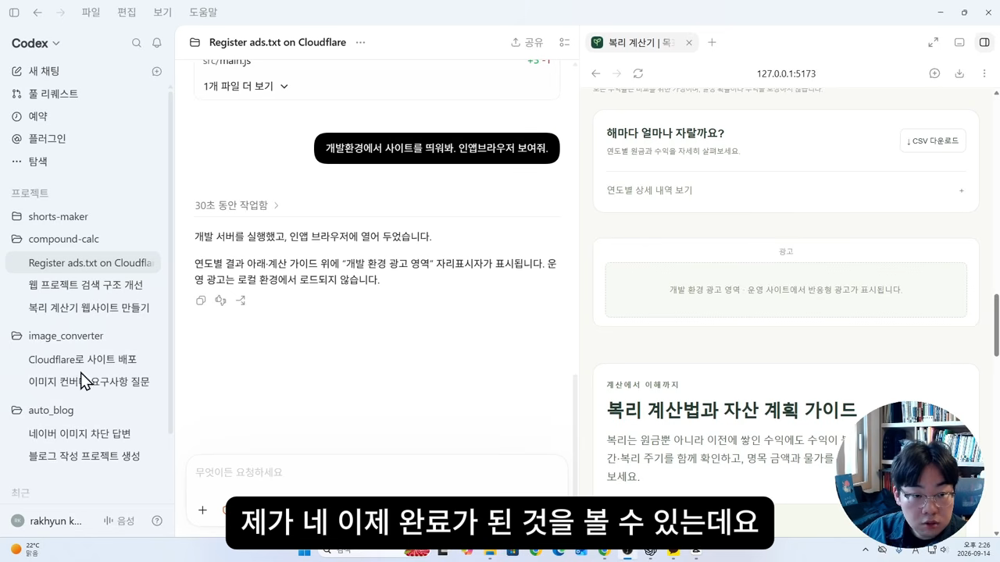
주석으로 위치 고치기
처음엔 광고가 하나만 들어가서 '메인에 3개, 글마다 2개 이상 넣어 줘'라고 다시 요청했어요. 글 안에는 잘 들어갔지만 메인에는 두 개가 연달아 붙어 버렸어요. 이럴 때는 말로 설명하기보다 주석 기능이 편해요. 인앱 브라우저 화면 위에 직접 '여기 광고 하나 없애 줘', '여기 아래에 하나 넣어 줘', '사이드바 밑에도 하나'를 적어요. 그다음 '주석을 참고해서 해당 위치에 광고가 들어가도록 수정해 줘'라고 하면 돼요.
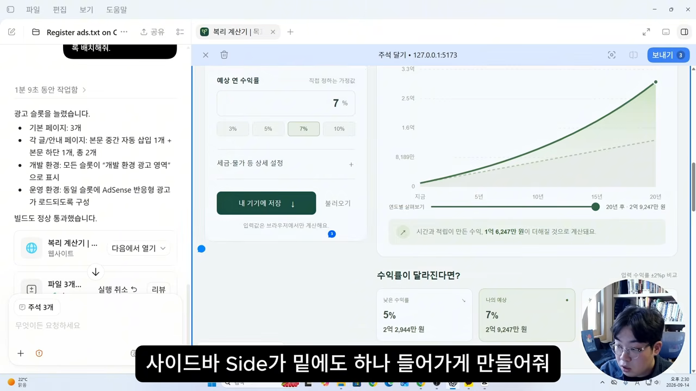
이제 승인을 기다려요
세팅을 마치면 애드센스 검토 결과를 기다리면 돼요. 말하는 사람은 영상 전날 검토를 요청해 아직 결과가 없었어요. 경험상 한 번에 통과한 적도, 서너 달 걸린 적도 있었대요. 아무것도 고치지 않고 다시 요청했는데 통과된 적도 있어서 운에 가깝다고 봐요. 그래서 승인 전에 세팅과 검색 등록을 다 해 두고, 승인되는 순간부터 수익이 나게 하자는 거예요.
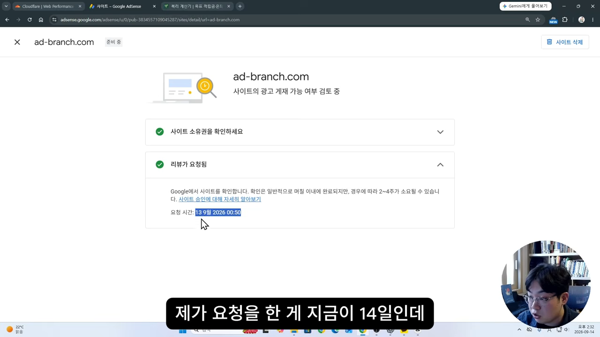
구글 서치 콘솔: 사이트맵과 색인 요청
검색 등록은 가장 많이 쓰는 구글부터 해요. 구글 서치 콘솔에서 속성을 추가하면 '도메인'과 'URL 접두어' 두 방식이 나와요. 말하는 사람은 도메인 칸에 ad-branch.com을 넣었어요.
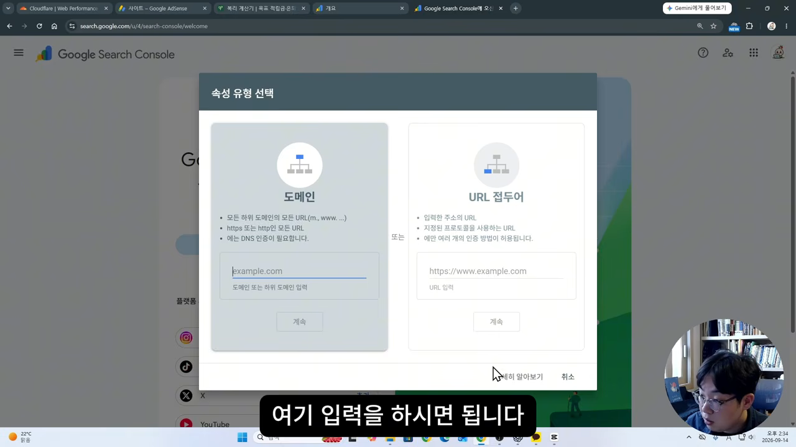
도메인 방식은 DNS 기록으로 소유권을 확인해요. 클라우드플레어에서 도메인을 샀다면 안내 창에서 버튼 몇 번으로 자동 처리돼요. 카페24 같은 다른 업체라면 안내대로 TXT 기록을 등록하면 되고, 막히면 화면을 그대로 복사해 AI에게 물어보라고 해요.

사이트맵 내기
사이트 주소 뒤에 /sitemap.xml을 붙여 열면 사이트맵이 보여요. 내 사이트에 어떤 주소로 어떤 페이지가 있는지 적어 둔 목록이에요. 사람은 메뉴를 하나하나 눌러 보면 되지만, 검색엔진은 이 목록부터 읽고 페이지를 살펴본 뒤 어떤 검색어에 보여 줄지 정해요.
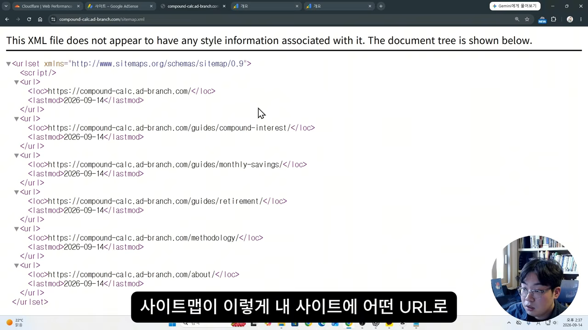
서치 콘솔의 Sitemaps 메뉴에 이 주소를 넣고 제출하면, 발견된 페이지 6개가 잡혀요. ad-branch.com을 도메인으로 등록해 뒀기 때문에 compound-calc.ad-branch.com 같은 서브 도메인의 사이트맵도 같은 속성에 낼 수 있어요.
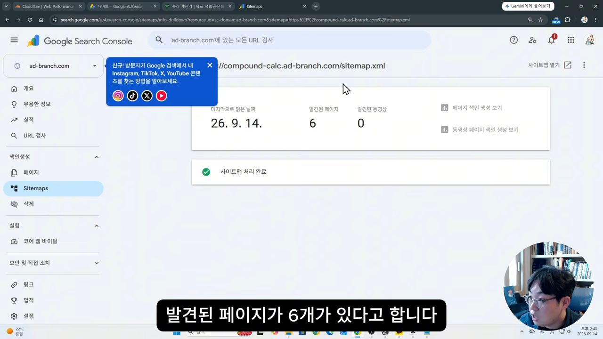
색인을 앞당기는 URL 검사
사이트맵을 냈다고 바로 검색에 나오지는 않아요. 구글이 돌아다니며 색인을 만들 때까지 며칠 기다려야 해요. 이걸 앞당기는 방법이 URL 검사예요. 메인 페이지 주소를 검사하면 'URL이 Google에 등록되어 있지 않음'이 나오는데, 여기서 '색인 생성 요청'을 눌러요.
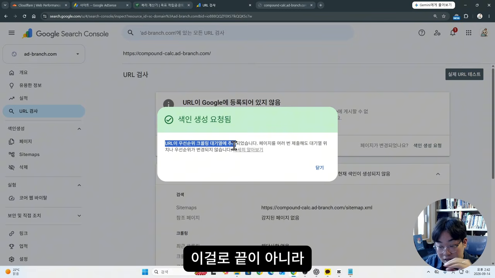
하루에 할 수 있는 양이 정해져 있고, 많이 한다고 좋은 것도 아니에요. 메인, 정책, 카테고리 같은 대표 페이지만 3~5개, 많아도 7개 정도 하라고 해요.
네이버 서치 어드바이저 등록
국내에서는 네이버 검색도 많이 쓰니 네이버에도 등록해요. 네이버 서치 어드바이저에 로그인해 웹마스터 도구로 들어가 사이트 주소를 넣으면 소유 확인을 요구해요. HTML 파일 업로드와 HTML 태그 두 방식이 있는데, 영상은 HTML 태그(메타 태그)를 골랐어요.
태그를 복사해서 AI 도구에 '네이버 서치 어드바이저를 위해 이걸 붙여야 돼, 배포까지 해 줘'라고 해요. 배포가 끝나면 네이버로 돌아와 '소유확인'을 눌러요.
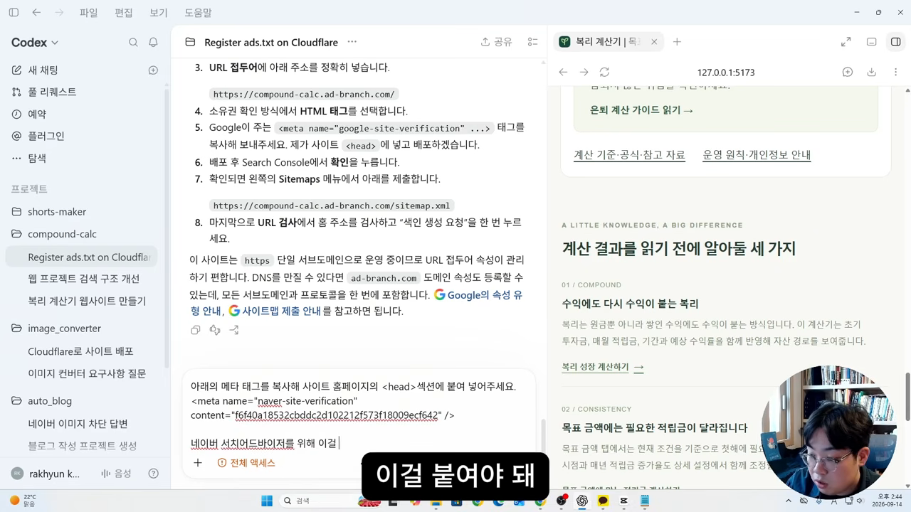
등록이 끝나면 할 일이 세 가지 더 있어요. 요청 메뉴의 사이트맵 제출에 구글 때와 같은 주소를 내요. 검증 메뉴에서 robots.txt가 잘 있는지 확인해요. 마지막으로 웹 페이지 수집 요청에 메인 주소를 넣어요.
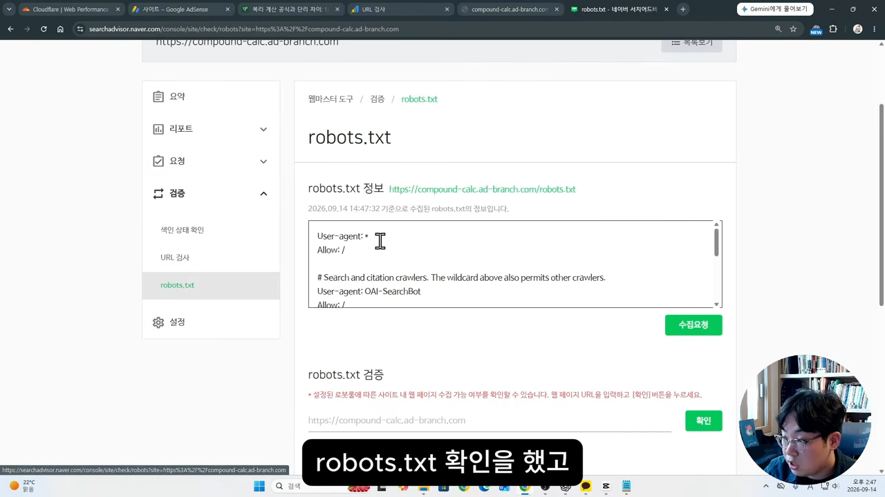
빙 웹마스터는 가져오기로 끝
마지막은 빙이에요. 크롬을 따로 깔지 않고 마이크로소프트 엣지를 그대로 쓰는 사람은 기본 검색엔진인 빙으로 검색하기도 해요. 빙 웹마스터는 구글 계정으로 로그인할 수 있어서, 서치 콘솔에 쓴 계정으로 들어가면 돼요.
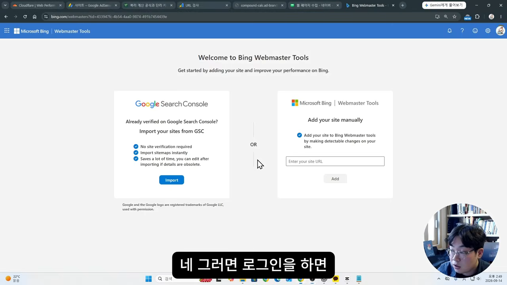
가져오기를 누르면 아까 등록한 사이트 1개가 발견되고, 그대로 가져와져요. 소유 확인을 따로 할 필요가 없어요. 사이트맵은 기다리면 들어오지만 시간이 걸려서, 바로 하고 싶으면 사이트맵 메뉴에서 직접 제출해요. URL 검사와 URL 제출도 구글처럼 몇 개만 해 두면 돼요.
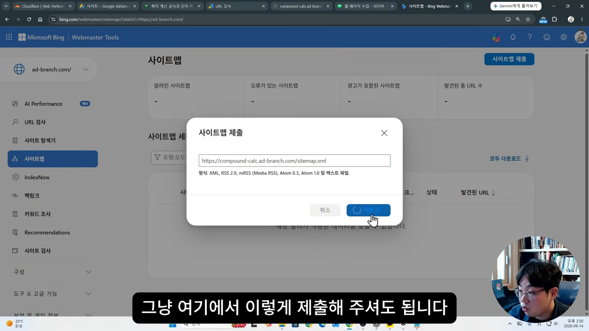
전체 순서 한눈에 보기
영상 끝에서 말하는 사람이 메모장에 순서를 정리해 보여 줘요. 그대로 체크리스트로 쓰기 좋아요.
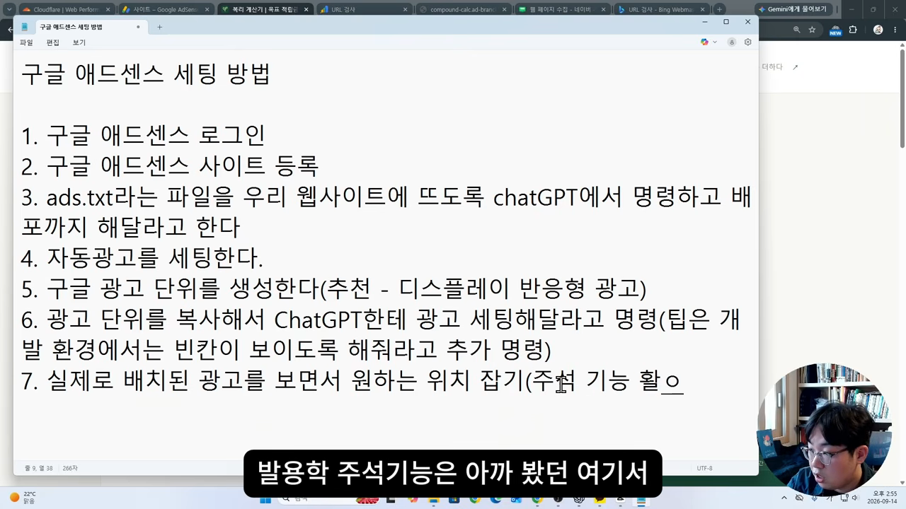

| 곳 | 소유 확인 | 그다음 할 일 |
|---|---|---|
| 구글 애드센스 | ads.txt를 AI에게 등록·배포시키기 | 자동 광고 켜기, 반응형 디스플레이 광고 단위를 AI로 배치, 주석으로 위치 조정 |
| 구글 서치 콘솔 | 도메인 속성, DNS 기록(클라우드플레어는 자동) | 사이트맵 제출, 대표 URL 3~5개 색인 요청 |
| 네이버 서치 어드바이저 | 메타 태그를 AI에게 붙이고 배포시키기 | 사이트맵 제출, robots.txt 확인, 웹 페이지 수집 요청 |
| 빙 웹마스터 | 서치 콘솔에서 가져오기(따로 필요 없음) | 필요하면 사이트맵·URL 직접 제출 |
이걸로 검색엔진에 사이트가 뜨고, 들어온 사람이 사이트를 쓰는 동안 자연스럽게 광고가 보이는 구조가 완성돼요. 말하는 사람은 이게 광고 수익형 세팅의 가장 기본이라고 해요. 노출과 수익을 더 올리는 개인적인 팁은 다음 영상들에서 다룬다고 해요.